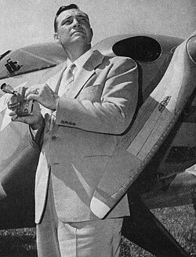

Kenneth Arnold
Pilot, 1915 to 1984

His June 1947 report of nine fast-moving objects near Mount Rainier led the press to coin the term "flying saucer." 1
Open in the interactive Watcher
Related
Sources
- Kenneth Arnold UFO sighting Wikipedia